Off-grid group chat and a shared live map. One board carries the GNSS, the storage and the long link; up to nine phones share it over WiFi and BLE, with no internet, no server and no cell coverage behind it. This document is the architecture — what the hardware does, what the app does, and the protocol where they meet. The reasoning behind each decision lives in PROJECT.md; the session-by-session history lives in BUILDLOG.md.
Two halves and the link between them. Everything else in this document elaborates one of the three.
| Part | Owns | Does not |
|---|---|---|
| The node T-Beam | What exists: the position log and its sequence numbers, the roster, admission decisions, airtime scheduling, undelivered dead-drop traffic. Holds GNSS and the only long-range radio. | Read message bodies — they are sealed planned. Keep the durable archive; it is a relay you might switch off. |
| The app Android | What it has received: its own cursors, and the durable copy of this user's messages and track in Room planned. All rendering, including uncertainty. | Invent sequence numbers, guess what the node holds, or claim delivery the node has not confirmed. |
| The link protocol | Binary 32-byte records for positions; one JSON object per text frame for everything else, both directions. Cursors, backlog, queue reasons, config, stats. | Carry anything the node needs to decrypt in order to schedule. It routes on {addressee, length}. |
Group messaging with no infrastructure is a solved problem — phones can mesh among themselves and need nothing bought. The node has to justify itself by being what a pile of phones structurally cannot be: infrastructure you carry.
| Pillar | What it means | Why a phone mesh cannot |
|---|---|---|
| Memory | Two tiers. The node logs every fix with a monotonic sequence number, serves any client its exact delta, and holds sealed traffic for people not here yet; each phone keeps its own archive. | A mesh remembers only what a present device holds — nothing stays awake to hand you what you missed. |
| Authority | One place decides what exists and states its reasons. Clients own only their cursors. | Peers with equal claim to truth must reconcile it: consensus, in a walking group. |
| Range | Licence-free LoRa measured in kilometres, from a fixed point, nobody needed in between. Sub-GHz also passes through concrete that 2.4 GHz does not. | Mesh reach is crowd density. Two people either side of a ridge — or a slab — have no path. |
| Truth | GNSS position and GNSS time straight from the constellation, uncertainty rendered on every point. | A phone with no signal has neither a trustworthy clock nor a fix to share. |
| Endurance | A stated power ladder: services shed in a fixed order, each step announced with its reason and an estimate. | Every phone guessing its own battery policy gives the group no predictable behaviour. |
The node. Everything is on the board already — the additions are two antennas and a cell.
| Subsystem | Part | Bus |
|---|---|---|
| MCU | ESP32-S3FN8 — dual core, 8 MB flash, 8 MB quad PSRAM | — |
| LoRa | SX1262 | SPI2 (dedicated) |
| GNSS | L76K (some units ship u-blox MAX-M10S) | UART1 |
| PMU | AXP2101, with coulomb counter. Switches the GNSS and LoRa rails — ALDO4 is the GNSS one, and it powers up switched off. | I²C1 |
| IMU | QMI8658 — not fitted on this unit; the motion gate falls back to GNSS speed | — |
| Magnetometer | QMC6310 (parked by decision) | I²C0 · 0x1c |
| Baro / temp / humidity | BME280 — fitted on this unit, not yet read | I²C0 · 0x77 |
| RTC | PCF8563 | I²C1 · 0x51 |
| Display | 1.3″ OLED, 128×64, SH1106 | I²C0 · 0x3c |
| Storage | microSD | SPI3 (dedicated) |
| Power | 18650 holder on the baseboard | — |
sensing radio power other
Every part has a job or is explicitly parked, so a later session never has to guess whether an idle chip is an oversight or a decision.
| Part | Job | Phase |
|---|---|---|
| OLED 1.3″ | The node is usable with zero phones connected. Pages cycled by the user button: roster and client count, queue depth and duty used, battery and hours left on the current rung, last message sender, pairing code, emergency state. The line between a dev board and a device you can put on a table and read. | 03 min · 04 full |
| User button | Physical emergency. Hold two seconds → lane-0 alert with position, whether or not any phone is attached. Short press cycles the display; long press enters pairing. | 04 · LoRa half 06 |
| AXP2101 + coulomb counter | The power ladder's numbers — hours left on each rung, and the thresholds that shed services. Measured, not estimated. | 06 |
| BME280 (when fitted) | Already in the record as baro/tmp with sentinels. Drives a pressure trend — falling pressure over three hours is worth telling a walking group — not altitude. | 06b |
| PCF8563 RTC | Holds time across deep sleep with GNSS powered down, so a node conserving battery still timestamps correctly. Disciplined by GNSS when a fix exists; fallback for the phone time service. | 06b |
| QMI8658 IMU | Motion gate for logging and beacon interval — a stationary node beacons less. Not tamper or free-fall detection. | 04 |
| 8 MB PSRAM | Backlog chunk buffers, the position ring, tile serving. The reason a client can catch up without stalling the node. | in use |
| microSD | Map tiles. 8 MB of internal flash cannot hold a PMTiles basemap; a card can. Not a log archive — LittleFS holds about a week and that is enough. Stays on SPI3. | 06b, optional |
| QMC6310 magnetometer | Nothing. Heading comes from course-over-ground, which is meaningless below walking pace — report unknown rather than noise. | — |
Runtime is a firmware feature, not a battery specification. The three transports differ by two orders of magnitude, which is the entire reason BLE is the idle state and the AP is on demand.
| Transport | Node draw | Throughput | Role |
|---|---|---|---|
| BLE | ~2 mA avg | 15–25 KB/s (2M PHY) | Always on. Presence, status, alerts — the idle state. |
| WiFi SoftAP | ~100 mA | 2–8 Mbit/s | On demand only. Bulk history, live stream, map tiles. Idle timeout enforced in firmware, not offered as a setting. |
| LoRa | 110 mA in TX | ~1 kbit/s | The link out. Positions and short messages, duty-cycle bound. |
Each rung is entered at a stated battery threshold, announced to every client with its reason, and carries a coulomb-counter estimate of how long it lasts. Nothing here is a surprise to the group.
serve everything AP + BLE + LoRa + logging // normal
BLE only AP dropped, clients keep syncing // below ~15%
beacon only LoRa position only, no clients // low — because this is when
someone is looking for it
sleep RTC + wake sources // critical
ESP-IDF v5.x with CMake directly — not Arduino, which hides the sleep, NimBLE and power APIs this needs, and not PlatformIO, whose IDF support lags on the S3. NimBLE for BLE, RadioLib as an IDF component for LoRa, esp_littlefs for storage, esp_http_server for HTTP and WebSocket.
| Task | Prio | Core | Responsibility |
|---|---|---|---|
| gnss_task | 5 | 0 | UART reads, NMEA parse, emit FixEvent. Never touches storage. |
| policy_task | 6 | 0 | Consumes fixes and motion. Decides log, geofence, beacon, sleep. |
| storage_task | 4 | 1 | Sole owner of LittleFS and SD. Serialises every write. |
| net_task | 4 | 1 | HTTP server, WebSocket per client, NimBLE GATT. |
| sched_task | 5 | 1 | Airtime scheduler: lanes, per-client credit, admission. |
| lora_task | 3 | 1 | Beacon TX, duty-cycle enforcement, DIO1 as a real IRQ. |
| power_task | 2 | 0 | AXP2101 polling, coulomb accounting, sleep entry. |
nvs , data, nvs , 0x9000 , 0x6000 otadata , data, ota , 0xf000 , 0x2000 app0 , app , ota_0 , 0x10000, 0x280000 app1 , app , ota_1 , , 0x280000 // rollback slot, not OTA delivery storage , data, littlefs , , 0x2C0000 // track log + manifest
The second app slot exists so a bad USB flash rolls back rather than bricking the node. Shipping over-the-air updates is a different thing and is not planned — this is flashed over USB.
CONFIG_BT_NIMBLE_MAX_CONNECTIONS=9 // default is 1; 9 is NimBLE's ceiling — the multi-client switch CONFIG_ESP_WIFI_SOFTAP_MAX_STA=10 // 9 clients + rejoin headroom CONFIG_SPIRAM_MODE_QUAD=y // quad on this module; octal aborts at boot CONFIG_SPIRAM_IGNORE_NOTFOUND=y // absent PSRAM degrades, never panics CONFIG_PM_ENABLE=y // dynamic frequency scaling CONFIG_FREERTOS_USE_TICKLESS_IDLE=y // the biggest idle-power win CONFIG_HTTPD_WS_SUPPORT=y CONFIG_ESP_TASK_WDT_TIMEOUT_S=10 CONFIG_BOOTLOADER_APP_ROLLBACK_ENABLE=y
printf is the wrong order.A second board is the cheapest way to double useful coverage, and it is what makes the indoor case work at all. Sub-GHz LoRa passes through concrete floors and walls that 2.4 GHz WiFi and BLE do not — so indoors it is one node per floor, phones attaching over WiFi/BLE to whichever is nearest, nodes linked to each other over LoRa. Outdoors it is the same trick across a ridge.
phones ──WiFi/BLE──┐
├── BOOSTER (floor 3) ──LoRa──┐
phones ──WiFi/BLE──┘ │
├── PRIMARY ── clients, log, roster
phones ──WiFi/BLE──── BOOSTER (basement) ──LoRa──┘
Native Android. The durable copy of a user's messages and track lives here, not on the node.
| Concern | Choice | Note |
|---|---|---|
| Language / UI | Kotlin + Jetpack Compose | Two modules: :protocol is plain Kotlin/JVM (codec + control frames, testable with no device), :app is the Compose client. |
| Map | MapLibre Android + PMTiles | Keyless raster basemaps today; offline tiles served from the node later. |
| Local store | Room (SQLite) planned | The durable copy of this user's messages and track. Lightweight, bundled with Android, no server. |
| Transports | OkHttp WebSocket over SoftAP · BLE GATT | Bind sockets to the WiFi Network object so Android's mobile-data fallback cannot steal the session. BLE arrives in Phase 03. |
| Background sync | Foreground service, connectedDevice | BLE sync with the screen off — the reason a native app was chosen over a browser. Lands with BLE. |
| Tests | JUnit against golden vectors · instrumented against the mock | The protocol module runs on the JVM, so codec work needs no device and no board. |
Captured from the running app against the mock node — all twelve screens, click any for full size. Five flat tabs; Link opens from the status bar and Diagnostics from a long-press on the title, so neither is a sixth tab.
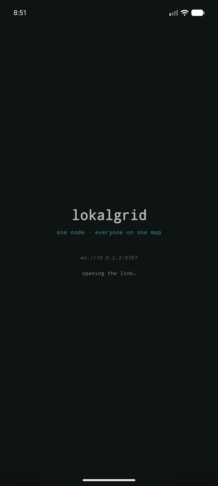
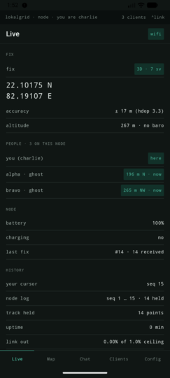
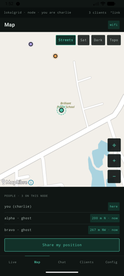
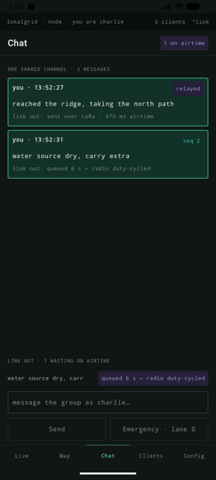
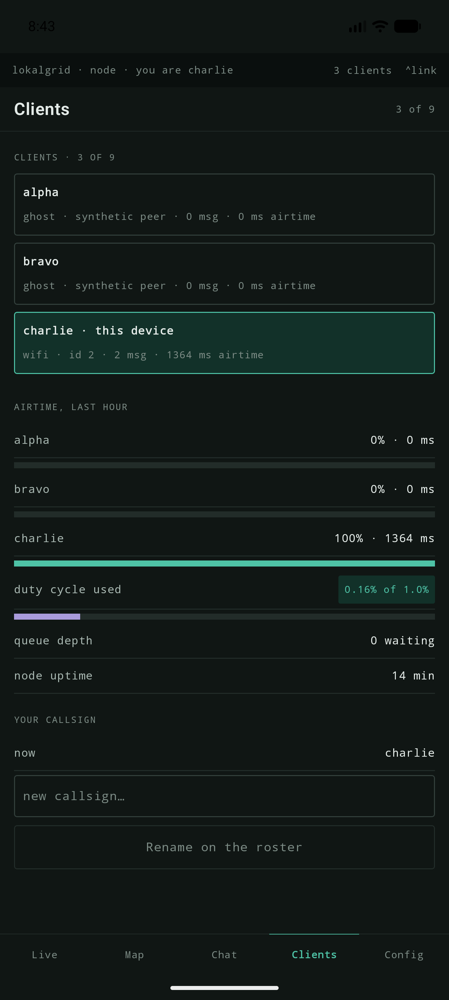
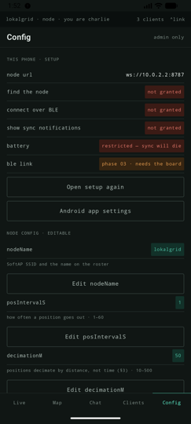
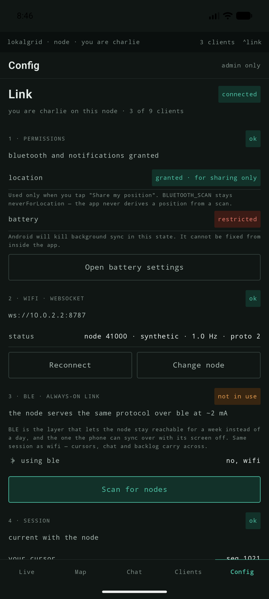
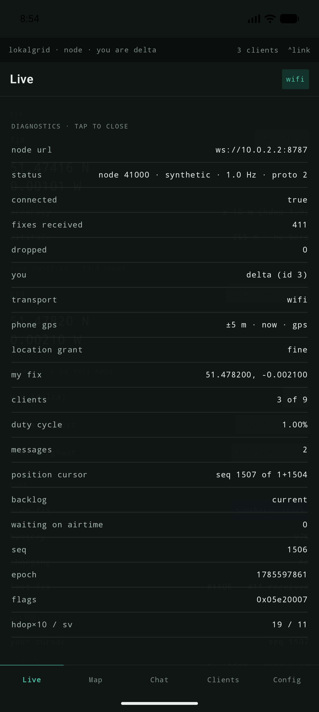
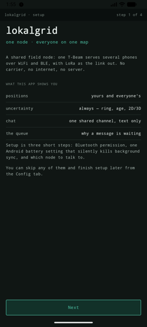
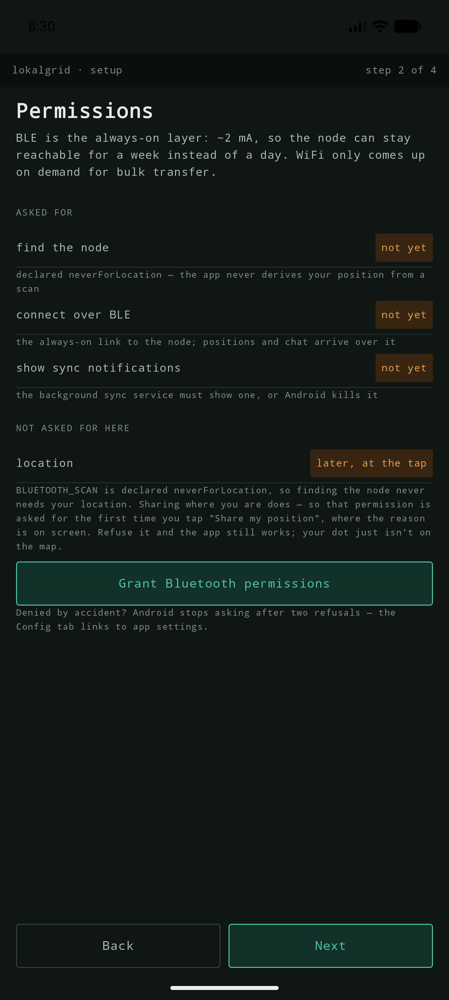
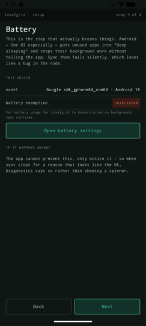
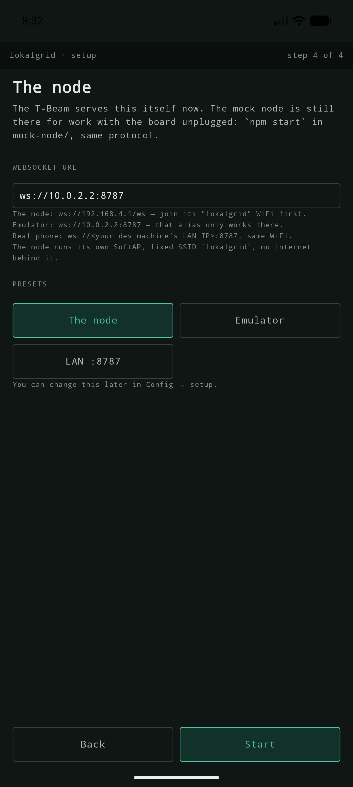
| Surface | Shows | You can |
|---|---|---|
| Live | Fix with HDOP accuracy and 2D/3D honesty, people on the node, node stats, cursor and log range, any gap. | Share position · rename callsign · reset the track. |
| Map | Your dot inside its accuracy ring, peers with age and staleness colour, the resumed track as a line. | Share position · switch basemap. |
| Chat | One shared channel. Two truths per message: what the node has (pending → seq N) and what the link out is doing (queue reason → relayed). | Send · send as emergency (lane 0). |
| Clients | Roster with ghosts labelled, per-client airtime share, duty used against the ceiling, queue depth, node uptime. | Rename on the roster. |
| Config | This phone's setup above; the node's config below, with locked keys carrying the reason they are not settings. | Stage edits, then write explicitly. |
| Link status bar | An ordered flow: permissions · wifi · ble · session, each with a state and its action. | Grant permissions · reconnect · change node. |
| Setup first run | Four steps: what this is · permissions · the battery trap · which node. Re-enterable from Config. | Grant · open battery settings · set the node URL. |
The phone holds the copy that matters; the node is a relay you might switch off, reflash or walk away from.
Room (SQLite), app-private storage message id, peerId|CHANNEL, dir, seqNode, body, epoch, lane, state, airtimeMs peer clientId, callsign, pubKey, lastSeen, lastLat/Lon/hdop track seq PRIMARY KEY, 32-byte record blob // survives the node being reflashed cursor nodeId, posSeq, msgSeq // one row per node, keyed by URL outbox msgId, ciphertext, addressee, queuedAt, reason
Room rather than a file format or a second framework: it ships with Android and a hobby build should not carry persistence it has to think about. Bodies are stored decrypted in app-private storage — a phone-level threat is out of scope, and a passphrase nobody types would be theatre. SQLCipher stays an option if that changes.
Network explicitly; BLE stays up underneath and the client resumes from its cursor.BLUETOOTH_SCAN is declared neverForLocation with BLUETOOTH_CONNECT alongside it, so finding the node never needs location — position arrives over the link after connecting, never from a scan result. ACCESS_FINE_LOCATION is requested for one thing only: the phone's own GNSS behind share my position, asked for at the tap rather than at first run, so the reason is on screen when the dialog appears. Refusing it leaves the app fully usable — the node's fix is shared instead, labelled as the node's.ghost; the BLE row says phase 03 · needs the board rather than implying a link that does not exist.Where the two halves meet. Positions are binary; everything else is one JSON object per text frame, both ways.
node → hello {proto, deviceId, recordBytes, hz, mode, you:{id,name}, cap, duty,
posOldest, posNewest, posHeld} // what I am, and what I hold
app → cursor {seq, posSeq} // what I already have, both streams
node → chat ×N // message delta
node → config, peer ×N, roster, stats // current state of everything else
node → backlog {from, to, count, lost, reason} // what I owe you — and what aged out
node → binary ×60, backlogChunk {cursor, remaining} // bounded chunk, then progress
…repeats, interleaved with live traffic…
node → backlogDone {cursor, live} // you are current; adopt this cursor
node → binary … // live records, one per second
Backlog is served in bounded chunks — sixty records per 250 ms tick — precisely so a client returning after an hour catches up beside the ones that are live rather than blocking them. The node states what it owes before sending it, including how many records aged out of the log first, because a gap must be drawn as a gap and never smoothed into a straight line.
Fixed width is the whole trick: offset = index × 32, so seeking is arithmetic rather than parsing. Little-endian throughout. The layout never shrinks per build — absent sensors write sentinels, they do not remove the field.
| Off | Field | Type | Note |
|---|---|---|---|
| 0 | epoch | u32 | GPS time when time_valid is set. |
| 4 | lat_e7 | i32 | ×10⁷ — about 1.1 cm. |
| 8 | lon_e7 | i32 | ×10⁷. |
| 12 | alt | i16 | Metres, GNSS. |
| 14 | baro | i16 | 0x8000 when no BME280 is fitted. |
| 16 | spd | u16 | cm/s. |
| 18 | hdg | u16 | Centidegrees. |
| 20 | sv | u8 | Satellite count. |
| 21 | hd | u8 | HDOP ×10 — what the accuracy ring is drawn from. |
| 22 | bat | u8 | Battery %. |
| 23 | tmp | i8 | °C, 0x80 if absent. |
| 24 | flags | u32 | See below. |
| 28 | crc32 | u32 | Over the first 28 bytes. |
| Bits | Field | Purpose |
|---|---|---|
| 0 | time_valid | Clear when logged without a fix — the client repairs the timestamp afterwards. |
| 1 | fix_3d | Clear means a 2D fix, so the altitude is fictional and must not be rendered as fact. |
| 2 | motion | IMU or GNSS speed said moving. |
| 3 | trip_start | First point after wake — segments trips without heuristics. |
| 4 | reserved | Unused. Leave zero, validate on read. |
| 5 | charging | From the PMU. |
| 6–7 | reserved | Leave zero, validate on read. |
| 8–15 | zone_mask | Which of the first eight geofences contained this point. |
| 16–31 | seq_lo | Low 16 bits of the monotonic counter — detects gaps in a live stream. |
One JSON object per text frame, in both directions. Protobuf replaces the JSON once codegen exists; the shapes will not change.
| node → client | Carries | Meaning |
|---|---|---|
| hello | identity, limits, log range | Who you are on this node, its ceiling, and what its log holds. |
| roster | clients[], cap | Everyone attached, resent on every join and leave. Also the node's answer about your own callsign. |
| chat | seq, from, name, text, epoch, lane, msgId? | The shared channel. seq is node-assigned; msgId echoes back only to the sender. |
| queued | msgId, reason, etaMs, ahead, airtimeMs | Renderable queue state for one of your messages. |
| relayed | msgId, airtimeMs, lane | It actually went out over the radio. |
| peer | id, name, latE7, lonE7, hd, epoch, ageS, movedM | Where someone else says they are. |
| peerSkip | reason, movedM | Your position was inside the decimation radius — with the distance that caused it. |
| backlog | from, to, count, lost, reason, oldest, newest | What you are owed, stated before it is sent. |
| backlogChunk / backlogDone | cursor, remaining / cursor, live | Progress, then the authoritative cursor to adopt. |
| config / configResult | values, locked, editable / applied, refused | The config in force; then what a write did, key by key. |
| stats | uptime, queueDepth, duty, clients[], log range | Airtime accounting, computed by the node — the app never estimates it. |
| rejected | scope, msgId?, reason | Admission control said no. Never silent. |
| client → node | Carries | Meaning |
|---|---|---|
| send | msgId, text|sealed, lane? | Post to the channel or to a callsign. Lane 2 normal, lane 0 emergency. |
| pos | latE7, lonE7, hd, epoch | Share where you are. The node decides whether it moved far enough to be worth the link. |
| cursor | seq, posSeq | What I already have, both streams. The client states it; the node never assumes. |
| name | name | Take a callsign. A clash is refused with a reason. |
| config | patch{} | An explicit write of staged edits — never a silent reconfigure. |
| reset | — | Restart the synthetic track (mock only). |
This is the engineering the project exists for. Three phones at 1 Hz already saturate ~1 kbit/s, so the scheduler is not an optimisation, it is the normal case.
0 emergency // pre-empts everything, ignores fairness 1 position // aggregated, decimated by distance — 50 m default, not by time 2 message // deficit round-robin across clients 3 bulk // only when the budget is otherwise idle
Keys come from an X25519 exchange at pairing, confirmed by a six-digit code shown on the node's own OLED — authenticated key exchange with no server, no QR and no secret typed twice, using a screen the board already has. Per-pair secrets for addressed messages; a node-issued group key, rotated when the roster changes, for the shared channel. Bodies are sealed with an AEAD, so the node schedules and queues from {addressee, length} and never needs the plaintext.
Both transports run the same session, so a client is a client whichever wire it arrived on. The service is 6f6b616c-6772-6964-0000-000000000001, advertised in the scan response; …0002 carries control frames (write and notify), …0003 notifies records in the framing below. The service UUID goes in the scan response because flags, name, transmit power and a 128-bit UUID do not fit in a 31-byte advertisement.
+--------+--------+---------------------+---------+ | seq u16| len u16| payload (N B) |crc16 u16| +--------+--------+---------------------+---------+ N = negotiated_mtu - 9 payload holds whole records only, never split crc16 CCITT over seq + len + payload
Whole records per chunk wastes a few bytes and eliminates an entire reassembly bug class. Every 32 chunks the client acknowledges its last good sequence number and the node advances the window; on a CRC failure or a gap the client stops acknowledging and re-requests from its last verified offset. A zero-length chunk ends the transfer.
A BLE client joins the session when it subscribes, not when it connects. A notification to a characteristic with no subscriber has nowhere to go and is discarded, so hello, the config and the roster — all of which the session sends at join — must not be issued before the client's CCCD writes land. The node therefore waits for notifications to be enabled on both characteristics; by then the MTU is negotiated too, so the first chunk is sized from the real value rather than from 23. Losing either subscription is treated as a departure, not a degraded mode.
| Condition | Behaviour |
|---|---|
| 10th client connects | Refused with a reason, then closed — node full — 9 of 9 clients. The cap is NimBLE's ceiling. |
| Your relay queue is full | Refused at enqueue, naming the depth and the duty cycle. The message is not silently dropped. |
| Position barely moved | Skipped with the distance that caused it — a silent skip looks like a dead GPS. |
| Battery below threshold | The power ladder sheds a service and announces which, why, and how long the next rung lasts. |
| Records aged out of the log | The backlog frame states how many were lost; the app drops its stale track rather than joining two unrelated stretches. |
What runs today, and the order of what comes next.
The board serves the app. The mock node is still there and still speaks the same protocol, which is what lets app work continue with the board unplugged.
| Piece | State | Detail |
|---|---|---|
firmware/ on the T-Beam | running | ESP-IDF v5.3.1. Boots, inventories both I²C buses, reads the PMU, switches the GNSS rail, mounts LittleFS, advertises over BLE with its GATT service, brings up the SoftAP and serves proto 2 on ws://192.168.4.1/ws. The OLED shows an inverted header badged with clients-against-cap, then ssid, wifi, ble (clients and negotiated MTU), gnss (satellites and HDOP, or the age of a lost fix) and the power source with uptime — so the node is readable with no phone attached, and its position carries its uncertainty on the device's own screen as well as in the app. |
| GNSS | real fixes | UART1, rx 9 / tx 8 at 9600, behind ALDO4. NMEA GGA/RMC/GSA into the 32-byte record: position, satellites, HDOP, altitude, speed, course, 2D-vs-3D. hello.mode says gnss once a fix exists and synthetic before, so no client can mistake one for the other. |
| Transports | two | WiFi WebSocket and BLE GATT run the same session: one protocol implementation, one roster, one client cap of 9, and each client's transport named on the roster. Verified end to end with two handsets on the board at once — one over BLE, one over WiFi — in a single roster. |
mock-node/ | running | Node.js. Synthetic track + replay, the full control-frame protocol, chat with node-assigned sequence numbers, the airtime queue with lanes and deficit round-robin, position decimation, config with locked keys, airtime stats, the position log with cursors and chunked backlog. --ghosts N adds synthetic peers; CAP, DUTY, HISTORY tune the pressure. |
android/:protocol | green | The 32-byte codec and every control frame, hand-parsed so an unknown frame from a newer node renders instead of killing the socket. 26 tests, including frame strings copied verbatim from the mock. |
android/:app | runs | Five tabs, the Link screen, first-run setup, the map with accuracy rings and a resumed track line, chat with delivery and queue state, cursors persisted per node. The phone's own GNSS drives your dot and what “share my position” sends, with the node's fix as a labelled fallback. Sockets are pinned to the WiFi network and reconnect by themselves. Two basemaps, and the visible area can be saved for offline use. |
| Codecs | three, agreeing | JS, Kotlin and C, each hand-written, all reproducing the same golden vectors byte for byte. firmware/test/run.sh builds the C one for the host — no board, no ESP-IDF. |
| Tests | 37 + 26 + 5 | npm test in mock-node/; ./gradlew :protocol:test in android/; firmware/test/run.sh. None needs a device or a board. |
app_main over the built-in USB-JTAG, and the BME280 read so baro and tmp carry values instead of sentinels. The app's BLE path is done — verified against the node with two handsets attached at once.| File | Holds |
|---|---|
PROJECT.md | The decision record: what was chosen, what was rejected and why, and which decisions supersede which. Read before re-proposing anything. |
BUILDLOG.md | Dated entry per session — what was tried, what surprised, what is next. Hobby projects die from lost context, not difficulty. |
mock-node/README.md | Frame-by-frame protocol reference and how to run the node under pressure. |
android/README.md | Build, run, and what each screen does. |
docs/screens/ | The screenshots above, at full resolution. |